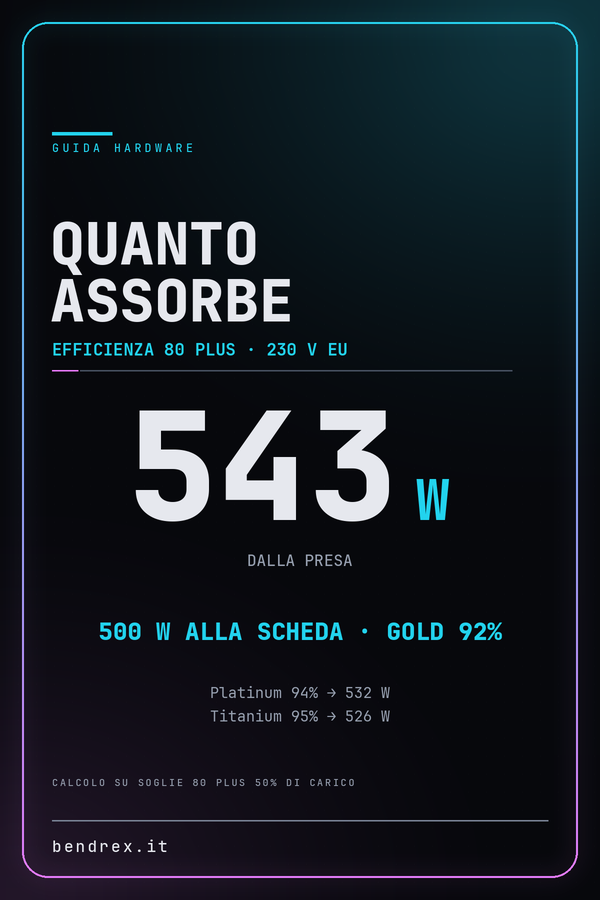

Home › Build PC › Alimentatore
Blog · HardwarePerché i watt dichiarati non bastano a dire se l'alimentatore regge

· Redazione BENDREX
In breve
- Il wattaggio è potenza in uscita, non assorbita: dalla presa si preleva di più, e il rapporto è l'efficienza.
- Il carico non è piatto: i picchi misurati delle GPU stanno il 20-30% sopra la media (ComputerBase, 27 maggio 2025), e il wattaggio va scelto su quelli.
- Le tabelle dei produttori bastano: 550 W per una 5060, 850 W per una 5080, 1.000 W per una 5090.
Quanti watt serve l'alimentatore di un PC? Il numero sul cartellino non risponde. «850 W» non è quello che l'alimentatore prende dalla presa. È quello che può dare alle componenti, e solo restando lì. Le schede video moderne non chiedono potenza in modo costante. Per un attimo possono chiedere molto più della media, e la specifica ATX 3.1 chiede all'alimentatore di reggere il colpo. Un alimentatore da 850 W conforme ad ATX 3.1 deve saper erogare 1.700 W per 100 microsecondi (Intel ATX 3.1, tabella 3-3, novembre 2023). NVIDIA indica 850 W per una RTX 5080 da 360 W (pagina prodotto, letta il 27 novembre 2026). Quel margine serve ai picchi, che ComputerBase misura dal 20 al 30% sopra la media (27 maggio 2025). Chi cerca «alimentatore pc quanti watt» trova tabelle di numeri. Qui c'è come leggerle.
Cosa significa «850 W» (e cosa non dice)
Un alimentatore prende la corrente dalla presa e la consegna alle componenti in corrente continua. Il numero sul cartellino è quello che riesce a consegnare, non quello che consuma. Quello che consuma è sempre più alto, perché una parte si perde come calore. Il conto è semplice: potenza erogata divisa per efficienza. Sono due numeri diversi, e quasi tutte le discussioni sui wattaggi nascono dal confonderli.
Della potenza erogata, la parte che conta per giocare è quella sul 12 V. È lì che si collegano processore e scheda video. Le altre tensioni servono a poco. Oltre al totale, quindi, vale la pena guardare quanta corrente l'alimentatore dichiara sul 12 V.
Poi c'è il motivo per cui il numero da solo non basta: il carico non è piatto. In un PC il consumo non è mai fermo. Una scheda video passa da poco a tanto in pochi millisecondi. Un alimentatore scelto sulla media si trova al limite proprio nei momenti peggiori.
La specifica ATX 3.1 (Intel, novembre 2023) serve a questo. Chiede agli alimentatori di reggere escursioni molto sopra il dichiarato, per tempi brevissimi. Il caso peggiore è il 200% della potenza dichiarata per 100 microsecondi. Su un 850 W significa 1.700 W.
«ATX 3.1» è la formula che si trova su quasi tutte le scatole. Rispetto alla 3.0 cambia il connettore per le schede video, che diventa il 12V-2x6. Aggiorna anche i requisiti di tenuta. I picchi, però, erano già nella 3.0. Un cavo solo porta al massimo 600 W. Per questo una 5080 chiede un cavo da 450 W o più, e una 5090 lo usa quasi tutto.
I picchi delle GPU: il dato che il wattaggio non copre
La potenza media di una scheda video non è il suo momento peggiore. ComputerBase misura la potenza della sola scheda a 1.000 campioni al secondo (metodo dichiarato, 27 maggio 2025). La misura è in 4K, sulla media di cinque giochi. La RTX 5080 sta a 307 W di media e arriva a 399 W di picco. La 5090 passa da 520 a 683 W, contro 575 W dichiarati. Il picco sta il 20-30% sopra la media, e sulla 5090 supera anche il dato di targa.
Per questo i produttori dimensionano sul picco, non sulla media. NVIDIA dichiara per ogni scheda un alimentatore consigliato. Il conto parte da un PC con Ryzen 9 9950X. Il risultato è 550 W per la 5060, 650 W per la 5070, 750 W per la 5070 Ti, 850 W per la 5080 e 1.000 W per la 5090.
Le pagine di 5080, 5070 Ti e 5090 sono state ricontrollate il 27 novembre 2026. Il dato della 5070 è quello del dossier del 24 novembre. Quel giorno la pagina italiana non rispondeva.
La regola pratica è semplice. Prendi il picco della scheda video. Aggiungi il processore e un centinaio di watt per il resto. Lascia un margine del 20-30%. Le tabelle dei produttori fanno già questo conto. Se la scheda dice 750 W, un 750 W ATX 3.1 di buona qualità basta: non serve salire a 1.000 W per stare tranquilli. L'unica eccezione è la 5090, dove il cavo lavora vicino al limite. ComputerBase misura 576 W medi e picchi a 675 W sul connettore (27 maggio 2025).
Efficienza: quanto vale in bolletta e quando smette di convenire
Essere «ATX 3.1» non vuol dire essere efficiente. La specifica chiede appena il 70% a pieno carico. L'efficienza la certifica 80 PLUS, ed è quello che significa la scritta «Gold» sulla scatola. Dice quanta parte della corrente prelevata arriva davvero alle componenti. Nella classe italiana, i 230 V, un Gold sta al 90% a basso carico. Sale al 92% a metà carico e scende all'89% a pieno carico (80 PLUS, pagina dei livelli, consultata il 24 novembre 2026). Non dice che l'alimentatore è ben fatto: dice solo quanto è efficiente.
Quanto vale in soldi? A 500 W erogati, un Gold al 92% preleva 543 W dalla presa. Un Platinum al 94% ne preleva 532, un Titanium al 95% ne preleva 526. Fra Gold e Titanium ci sono 17 W, circa 31 kWh l'anno a cinque ore al giorno. Non è niente, e non è il motivo per pagare il doppio. Il Gold è il punto in cui la spesa in più smette di ripagarsi. È un giudizio pratico, non un dato misurato.
C'è un effetto che vale più dei kWh: la curva. Facciamo un esempio, non una misura di un PC vero. Se il PC eroga 400 W, un 650 W lavora al 62% e un 850 W al 47%. Entrambi sono nella zona buona, dove un Gold rende il 92%. Prendere un alimentatore più grosso «per stare largo» non fa risparmiare: sposta il punto di lavoro. E un alimentatore più potente non consuma di più di per sé. Il consumo segue il carico, e a parità di carico conta l'efficienza di quel modello.
Tre cose non le scrivo come dati, perché non le ho verificate. Quanto spesso si sia fuso un vecchio connettore 12VHPWR: i casi esistono, ma non sono una statistica. I numeri dei calcolatori di potenza online: nessuno documenta il metodo. L'effetto dell'età dei condensatori: argomento reale, senza misure datate.
Scelte consigliate
In qualità di Affiliato Amazon io ricevo un guadagno dagli acquisti idonei.
Prezzi indicativi, stima di mercato, non un'offerta Amazon: i prezzi possono variare.
Due tagli coprono i due casi dell'articolo. Entrambi sono ATX 3.1 con cavo 12V-2x6 nativo e un'efficienza Gold; sulla scheda Amazon la certificazione indicata è Cybenetics Gold, non 80 PLUS.
- CORSAIR RM750e (2025), 750 W — il taglio per una build fino alla 5070 Ti. Alla verifica stava intorno ai 75 €, con uno sconto dichiarato da Amazon. CORSAIR RM750e 750 W su Amazon
- CORSAIR RM850e (2025), 850 W — il taglio dell'esempio con la 5080: 850 W sono esattamente quelli che NVIDIA chiede per quella scheda. Alla verifica stava intorno agli 83 €. CORSAIR RM850e 850 W su Amazon
Nessuno dei due è un consiglio assoluto. Se la scheda video chiede 650 W, il 750 W è già sopra il necessario; il 1.000 W ha senso solo con una 5090 o una CPU molto assetata.
Domande frequenti
- Quanti watt serve un alimentatore per una RTX 5080?
850 W, secondo NVIDIA, con un PC basato su Ryzen 9 9950X (pagina prodotto, letta il 27 novembre 2026). La scheda ha 360 W dichiarati e 399 W di picco misurato. Serve un cavo da 450 W o tre connettori da 8 pin.
- Un alimentatore più potente consuma di più?
No. Il consumo segue il carico del PC, non la targa dell'alimentatore. Quello che si preleva dalla presa è la potenza erogata divisa per l'efficienza, e l'efficienza è quella del singolo modello. A parità di carico contano le sue soglie, non i watt dichiarati.
- ATX 3.1 è meglio di ATX 3.0?
Dipende da cosa guardi. La 3.1 cambia il connettore delle schede video, che diventa il 12V-2x6, e aggiorna la tenuta. I requisiti sui picchi li aveva già introdotti la 3.0. Nessuna delle due garantisce l'efficienza.
- «80 PLUS Gold» significa che l'alimentatore è di qualità?
No, significa che supera le soglie di efficienza della classe: nel 230 V, 90% a basso carico, 92% a metà, 89% a pieno carico. Non dice niente su protezioni, condensatori, ripple o rumore.
Dati rilevati il 24 novembre 2026, con le verifiche del 27 novembre 2026 indicate accanto a ogni voce. Intel ATX 3.1: rev. 2.1a, novembre 2023 (documento 336521). ComputerBase: 27 maggio 2025. Pagine NVIDIA: consultate il 27 novembre 2026, salvo la 5070.
Fonti
| Fonte | Cosa fornisce | Data |
|---|---|---|
| Intel, ATX 3.1 Design Guide, rev. 2.1a (doc. 336521) | escursioni 200% a 100 µs (tab. 3-3); 12V-2x6 da 600 W (tab. 3-5); efficienza minima 70% (tab. 4-14) | novembre 2023 |
| nvidia.com — pagine prodotto RTX 5060, 5070 Ti, 5080, 5090; nota 5 «basato su Ryzen 9 9950X» | wattaggio consigliato per scheda | consultate 27/11/2026 (5070: dossier 24/11/2026) |
| computerbase.de — Grafikkarten 2025: Neue Messwerte zur Leistungsaufnahme | media e picchi misurati: 5080 307/399 W, 5090 520/683 W; 576/675 W sul connettore della 5090 | 27/05/2025 |
| 80 PLUS (CLEAResult) | soglie 230 V EU per Gold/Platinum/Titanium | consultata 24/11/2026 |